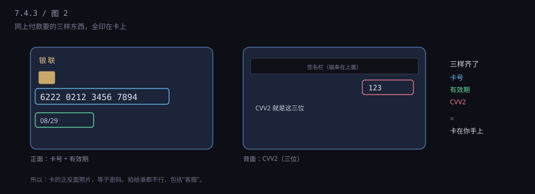
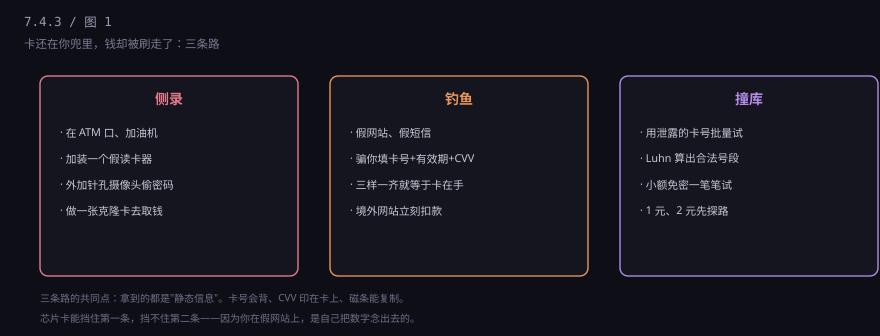
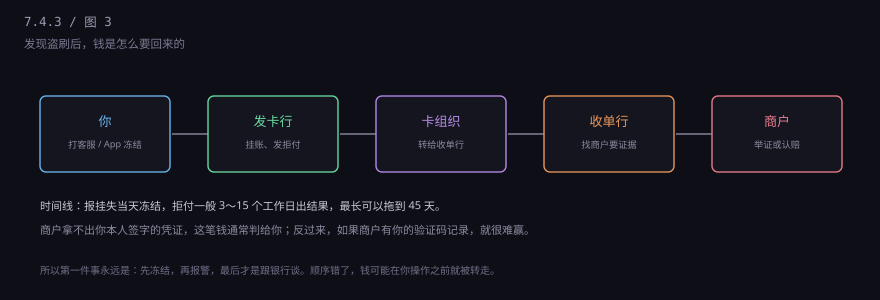

约 0.3 万字 · 3 张图 · 卡在你兜里，钱在境外被刷走，中间只差三个数字
卡背面签名栏旁边那三位数，叫 CVV2（Visa 叫 CVV2， Mastercard 叫 CVC2，银联也叫 CVN2，意思一样）。 它是印在卡上的，纯给人看。
另有一个 CVV1，藏在磁条里，刷卡的时候跟着卡号一起被读出来。 这个肉眼看不见，所以你从来不会注意它。

为什么要多一个 CVV？因为在早期，商户会把你刷卡时留下的复写纸小票存档， 那些小票上有完整的卡号。有了 CVV 之后，光有卡号刷不了网单， 还得有那三位数——而那三位数不在小票上。
这个设计在 1990 年代是有效的。现在不灵了，因为拍照太容易： 一张正反面照片，三样全给。
绝大多数盗刷，走的都是这三条路之一。

第一条：侧录。 在 ATM 插卡口套一个假读卡器，在键盘上方装一个针孔摄像头。 你插卡、输密码，它就同时拿到了磁条数据和密码， 回头做一张克隆卡，在别的地方取现。 这条路的克星是芯片——磁条数据没用，密码对了也过不了芯片那一关。
第二条：钓鱼。 假银行短信、假购物网站、假客服。 话术千奇百怪，最终目的只有一个：让你把卡号、有效期、CVV 报出去， 或者把收到的验证码报出去。 这条路最凶，因为你是自愿的。
第三条：撞库与号段试探。 用泄露的卡号批量试，或者干脆用 Luhn 算法生成一堆"长得合法"的卡号， 拿到境外那些验证很松的网站上，一笔一笔小额试。 试通了，这张卡就进了他们的"可用库"，转手卖给别人。
这里补充一个关键问题：被盗刷的钱，最后谁来赔？
答案取决于这笔交易"该不该被拦住"。 国际卡组织有一套责任转移规则： 如果一张芯片卡在支持芯片的终端上被强制走了磁条通道（降级）， 损失由商户或收单行承担；如果是纯磁条卡被盗刷， 损失通常落在发卡行头上。
无卡交易（网付）又是另一套：如果商户支持 3D Secure 并且你通过了验证， 争议时商户有证据，损失算你的；如果商户根本没做验证， 拒付基本判给你。
这套规则的意思是：谁放松了验证，谁承担风险。 它不是道德判断，是成本分配机制—— 正因为有这条，商户才有动力去升级设备、去接验证。
因为要验证这张卡还活着。
盗刷的人手里可能有几万个卡号，大部分已经过期、销户、冻结。 他要先筛一遍：拿 1 美元、1 日元、0.5 欧元去试， 能过的那批才是活的。小额不容易触发风控，也不容易引起你注意。
所以有个反常识的建议：看到莫名其妙的 1 元、2 元境外消费，别当诈捐， 那可能是一次试探。先冻结，再查。
顺便算一笔账，你就知道为什么"生成卡号"是可行的： 前 6 位 BIN 是公开的（网上能查到哪家银行用哪段）， 后 1 位校验位可以算，中间 9 位随便填。 也就是说，只要知道一个 BIN，就能批量造出无数个"格式合法"的卡号。
但造出来的号绝大多数是死的——银行系统里根本没有这个账户。 所以骗子必须试，试的成本越低，他们越猖狂。 这也是为什么小额免密、免验证的境外网站，是他们的首选目标。
国内网付的"短信验证码"，国际上对应的机制叫 3D Secure（Visa 叫 Verified by Visa， Mastercard 叫 SecureCode）。原理一样：除了卡上的三样， 还要证明"手机在你手上"。
这一层很有用，因为它把"知道卡上数字"和"能收到短信"分开了。 骗子拿到卡号也过不去。
但它有个致命弱点：验证码是你自己填的。 骗子冒充客服说"帮您取消一笔误下单，念一下收到的验证码"， 你一念，这层防护就等于不存在。
记住一句话就够了：任何要你报验证码的人，无论他说自己是谁，都是骗子。 银行、公安、客服、平台，没有任何一方需要你的验证码。
下面这几句话，是过去几年最高频的开场白，听到任何一句就该挂电话：
"您有一笔误下单，需要帮您取消，念一下收到的验证码。"
"您的航班取消了，退款需要核对银行卡信息。"
"我们是公安局的，您涉嫌洗钱，需要把资金转到安全账户。"
"您的快递丢了，我们三倍赔付，加个微信。"
"帮我们刷个单，本金马上退，佣金当天结。"
这些话术有一个共同结构：先制造一个紧急的、你必须配合的事件， 再把你引导到"由他控制"的通道里（电话、微信、屏幕共享）。 一旦进了那个通道，他会一步步让你自己完成转账或报码。
2020 年之后还有一个新变种：让你装一个"远程协助"App， 说是帮你操作，实际是看着你输密码。 屏幕共享永远不要对陌生人开，这一条比什么都重要。
发现盗刷，先做三件事，顺序不能乱：冻结 → 报警 → 找银行谈。 冻结是为了止损，报警是为了留证据（立案回执后面要用）， 谈钱才是最后一步。

流程是：你向发卡行提出"这笔不是我刷的"，发卡行先把钱挂账退回给你， 然后通过卡组织把争议转给收单行，收单行找商户要证据。 商户拿不出你本人授权的凭证，这笔钱就判给你。
反过来，如果商户能拿出你输入验证码的记录、你签字的单据、 或者 IP 和设备信息显示就是你本人，那就很难赢。 所以"我根本没买过"这句话，得有证据支撑。
时间上：报挂失当天就该冻结，拒付一般 3 到 15 个工作日出结果， 跨境争议最长可以拖到 45 天。
报警要带什么？身份证、银行卡、交易明细（银行 App 里能导出）、 以及你手上所有能证明"不是我"的东西——那段时间的行程、 位置记录、通话记录。立案回执一定要拿， 它既是给银行看的证据，也是后续追责的凭据。
还有一件容易忽略的事：盗刷会不会影响你的征信？ 如果你及时报备、银行认定为盗刷，这笔欠款会被挂起，不上报逾期。 但如果你没发现、没报案，账单逾期了，记录照样上你的报告。 所以"早发现"不只是省钱，也是保信用。
一、关掉不必要的境外交易。多数银行 App 里能单独开关， 不出国就关掉，这一条能挡掉一大半盗刷。
二、设交易限额。单笔、单日都能设，把损失封顶。
三、卡不离视线。吃饭结账别让服务员把卡拿走， 跟着去前台，或者直接用手机支付。
四、不在聊天工具里发卡的照片。要卡号就手打， 正反面照片永远不发。
五、开消费提醒。短信或 App 推送，每一笔都响。 这是你能最早发现盗刷的通道，比月底对账早一个月。
六、磁条卡去换芯片卡。免费的，去网点十分钟， 或者 App 上申请邮寄。